library(tidyverse)
library(patchwork) # merge plots
library(ggridges) # ridges plot
library(glue) # paste plot labels
library(yardstick) # helper roc curves and auc
library(rstanarm) # bayesian model
library(bayestestR) # helper for the bayesian model
library(broom) # make tidy
# Source: https://www.kaggle.com/gilsousa/habermans-survival-data-set
haberman <- read_csv('data/haberman.csv', col_names = c('age',
'operation_year',
'nodes',
'survival'))
haberman <- haberman %>%
mutate(survival = factor(if_else(survival == 1, 'Yes', 'No'))) %>%
mutate(operation_year = factor(operation_year)) %>%
mutate(id = as.character(row_number())) %>%
select(id, everything())Overview
In this post, we will get a first approximation to the “uncertainty” concept. First, we will train two models: logistic regression and its “Bayesian version” and compare their performance. Furthermore, we will explore the advantage of using a Bayesian model when we want to estimate how likely is our prediction. Finally, we will briefly discuss why there are some predicted values more probable than others.
Get the data
First, we download this data from Kaggle. This dataset includes 306 patients from a study of patients that had undergone a surgical operation on breast cancer. The table consists of three explanatory variables:
- Age of patient during surgical operation (
age) - Year when the operation was made (
operation_year) - Number of positive axillary nodes detected (
nodes)
Furthermore, there is a column (survival) that indicates whether the patient survived at least 5 years after the operation.
Exploratory analysis
Since the dataset has 3 explanatory variables, let’s plot the distribution of each one of them with the response variable survival:
p1 <- haberman %>%
ggplot(aes(age)) +
geom_density(aes(fill = survival), color = 'black', alpha = 0.4) +
theme_bw()
p2 <- haberman %>%
ggplot(aes(nodes)) +
geom_density(aes(fill = survival), color = 'black', alpha = 0.4) +
theme_bw()
p3 <- haberman %>%
group_by(operation_year, survival) %>%
summarise(n = n()) %>%
mutate(perc = 100*(n / sum(n))) %>%
ggplot(aes(operation_year, perc)) +
geom_col(aes(fill = survival), color = 'black') +
theme_bw() +
labs(y = 'Percentage (%)')`summarise()` has grouped output by 'operation_year'. You can override using
the `.groups` argument.p1 + p2 + p3 + patchwork::plot_layout(nrow = 3)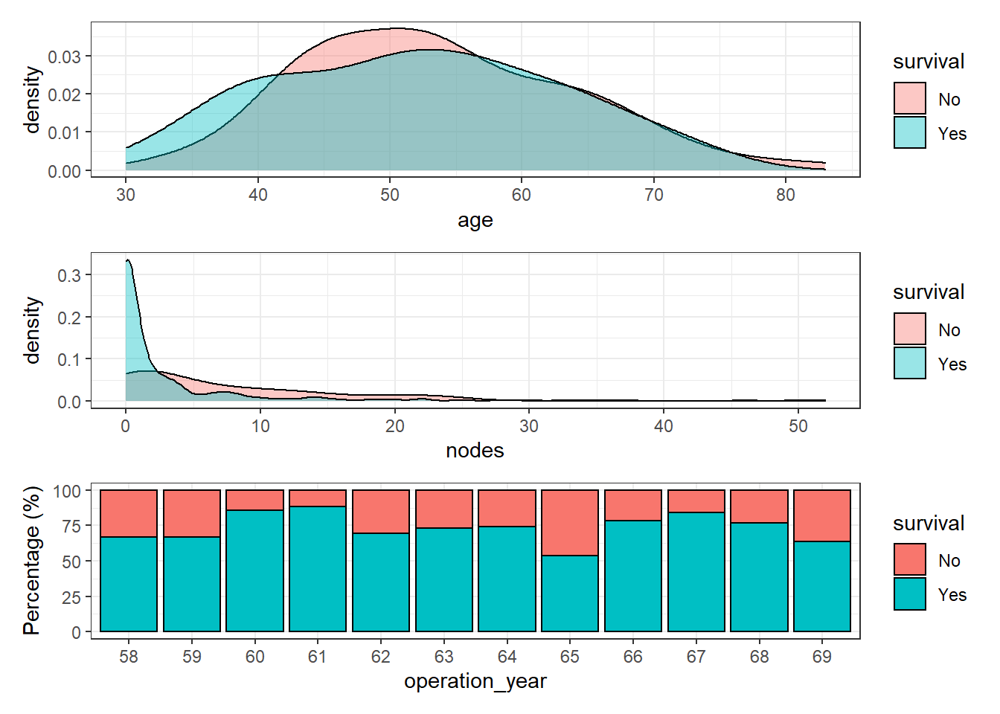
Age and number of nodes seem to have a reasonable distribution but surprisingly, patient survival does not increase along the operation year. In theory, the patient survival of most cancer types has increased dramatically over the years. Therefore, it seems reasonable to find a similar pattern in this dataset. The interval of time (1958-1969) seems long enough and happened during a period of major progress in clinical therapies.
A plausible explanation is an underlying effect of, at least, one remaining variable. Let’s observe the distribution of the variable age of patient over the years:
haberman %>%
ggplot(aes(age, operation_year)) +
geom_density_ridges(aes(fill = operation_year), show.legend = FALSE) +
theme_bw()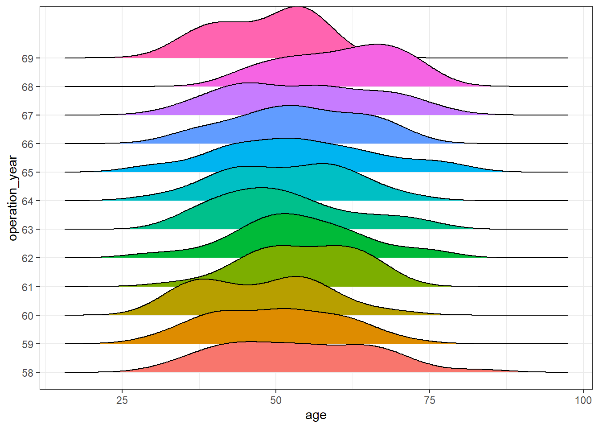
haberman %>%
ggplot(aes(operation_year, age)) +
geom_boxplot(aes(fill = operation_year), show.legend = FALSE) +
theme_bw()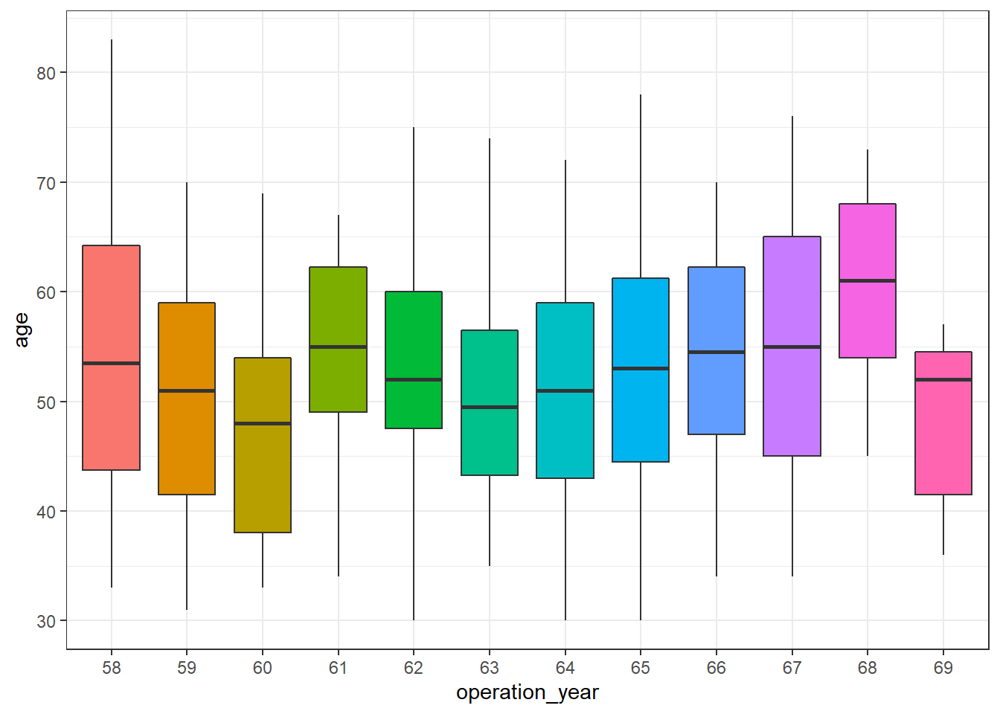
There seem to be differences over the years. In this post, further analysis to control for this effect is out of scope, but a more exhaustive analysis of this dataset should be aware of it.
Classification
Once we have explored quickly the dataset, we are going to train a model to try to predict whether the patient survived 5 years after the operation.
To do so, we are going to test two different approaches:
- Logistic regression
- Bayesian generalized linear models
In this blog post, we will skip aspects such as cross-validation, feature engineering, precision-recall curve, or unbalanced labels (there is).
Split data
First, we will split the available dataset haberman into two sets, a training (70%) and a test (30%).
set.seed(991)
training_ids <- haberman %>% sample_frac(0.7) %>% pull(id)
hab_training <- haberman %>%
filter(id %in% training_ids) %>%
mutate(operation_year = as.integer(operation_year))
hab_test <- haberman %>%
filter(!id %in% training_ids) %>%
mutate(operation_year = as.integer(operation_year))We will train independently both models with the training set and predict the labels of the response variable (“survive”, “no survive”) in the test dataset. These predicted labels will be useful to compare both models in terms of performance and further aspects.
Training - logistic regression
In R, we just need to use the glm function and specify the argument family = binomial:
logistic_model <- glm(survival ~ age + nodes + operation_year, family = 'binomial',
data = hab_training)Training - Bayesian logistic regression
Thanks to the package rstanarm that provides an elegant interface to stan, we can keep almost the same syntax used before. In this case, we use the function stan_glm:
bayesian_model <- rstanarm::stan_glm(survival ~ age + nodes + operation_year,
family = 'binomial',
data = hab_training,
prior = normal())
SAMPLING FOR MODEL 'bernoulli' NOW (CHAIN 1).
Chain 1:
Chain 1: Gradient evaluation took 0 seconds
Chain 1: 1000 transitions using 10 leapfrog steps per transition would take 0 seconds.
Chain 1: Adjust your expectations accordingly!
Chain 1:
Chain 1:
Chain 1: Iteration: 1 / 2000 [ 0%] (Warmup)
Chain 1: Iteration: 200 / 2000 [ 10%] (Warmup)
Chain 1: Iteration: 400 / 2000 [ 20%] (Warmup)
Chain 1: Iteration: 600 / 2000 [ 30%] (Warmup)
Chain 1: Iteration: 800 / 2000 [ 40%] (Warmup)
Chain 1: Iteration: 1000 / 2000 [ 50%] (Warmup)
Chain 1: Iteration: 1001 / 2000 [ 50%] (Sampling)
Chain 1: Iteration: 1200 / 2000 [ 60%] (Sampling)
Chain 1: Iteration: 1400 / 2000 [ 70%] (Sampling)
Chain 1: Iteration: 1600 / 2000 [ 80%] (Sampling)
Chain 1: Iteration: 1800 / 2000 [ 90%] (Sampling)
Chain 1: Iteration: 2000 / 2000 [100%] (Sampling)
Chain 1:
Chain 1: Elapsed Time: 0.136 seconds (Warm-up)
Chain 1: 0.113 seconds (Sampling)
Chain 1: 0.249 seconds (Total)
Chain 1:
SAMPLING FOR MODEL 'bernoulli' NOW (CHAIN 2).
Chain 2:
Chain 2: Gradient evaluation took 0 seconds
Chain 2: 1000 transitions using 10 leapfrog steps per transition would take 0 seconds.
Chain 2: Adjust your expectations accordingly!
Chain 2:
Chain 2:
Chain 2: Iteration: 1 / 2000 [ 0%] (Warmup)
Chain 2: Iteration: 200 / 2000 [ 10%] (Warmup)
Chain 2: Iteration: 400 / 2000 [ 20%] (Warmup)
Chain 2: Iteration: 600 / 2000 [ 30%] (Warmup)
Chain 2: Iteration: 800 / 2000 [ 40%] (Warmup)
Chain 2: Iteration: 1000 / 2000 [ 50%] (Warmup)
Chain 2: Iteration: 1001 / 2000 [ 50%] (Sampling)
Chain 2: Iteration: 1200 / 2000 [ 60%] (Sampling)
Chain 2: Iteration: 1400 / 2000 [ 70%] (Sampling)
Chain 2: Iteration: 1600 / 2000 [ 80%] (Sampling)
Chain 2: Iteration: 1800 / 2000 [ 90%] (Sampling)
Chain 2: Iteration: 2000 / 2000 [100%] (Sampling)
Chain 2:
Chain 2: Elapsed Time: 0.154 seconds (Warm-up)
Chain 2: 0.117 seconds (Sampling)
Chain 2: 0.271 seconds (Total)
Chain 2:
SAMPLING FOR MODEL 'bernoulli' NOW (CHAIN 3).
Chain 3:
Chain 3: Gradient evaluation took 0 seconds
Chain 3: 1000 transitions using 10 leapfrog steps per transition would take 0 seconds.
Chain 3: Adjust your expectations accordingly!
Chain 3:
Chain 3:
Chain 3: Iteration: 1 / 2000 [ 0%] (Warmup)
Chain 3: Iteration: 200 / 2000 [ 10%] (Warmup)
Chain 3: Iteration: 400 / 2000 [ 20%] (Warmup)
Chain 3: Iteration: 600 / 2000 [ 30%] (Warmup)
Chain 3: Iteration: 800 / 2000 [ 40%] (Warmup)
Chain 3: Iteration: 1000 / 2000 [ 50%] (Warmup)
Chain 3: Iteration: 1001 / 2000 [ 50%] (Sampling)
Chain 3: Iteration: 1200 / 2000 [ 60%] (Sampling)
Chain 3: Iteration: 1400 / 2000 [ 70%] (Sampling)
Chain 3: Iteration: 1600 / 2000 [ 80%] (Sampling)
Chain 3: Iteration: 1800 / 2000 [ 90%] (Sampling)
Chain 3: Iteration: 2000 / 2000 [100%] (Sampling)
Chain 3:
Chain 3: Elapsed Time: 0.156 seconds (Warm-up)
Chain 3: 0.115 seconds (Sampling)
Chain 3: 0.271 seconds (Total)
Chain 3:
SAMPLING FOR MODEL 'bernoulli' NOW (CHAIN 4).
Chain 4:
Chain 4: Gradient evaluation took 0 seconds
Chain 4: 1000 transitions using 10 leapfrog steps per transition would take 0 seconds.
Chain 4: Adjust your expectations accordingly!
Chain 4:
Chain 4:
Chain 4: Iteration: 1 / 2000 [ 0%] (Warmup)
Chain 4: Iteration: 200 / 2000 [ 10%] (Warmup)
Chain 4: Iteration: 400 / 2000 [ 20%] (Warmup)
Chain 4: Iteration: 600 / 2000 [ 30%] (Warmup)
Chain 4: Iteration: 800 / 2000 [ 40%] (Warmup)
Chain 4: Iteration: 1000 / 2000 [ 50%] (Warmup)
Chain 4: Iteration: 1001 / 2000 [ 50%] (Sampling)
Chain 4: Iteration: 1200 / 2000 [ 60%] (Sampling)
Chain 4: Iteration: 1400 / 2000 [ 70%] (Sampling)
Chain 4: Iteration: 1600 / 2000 [ 80%] (Sampling)
Chain 4: Iteration: 1800 / 2000 [ 90%] (Sampling)
Chain 4: Iteration: 2000 / 2000 [100%] (Sampling)
Chain 4:
Chain 4: Elapsed Time: 0.136 seconds (Warm-up)
Chain 4: 0.117 seconds (Sampling)
Chain 4: 0.253 seconds (Total)
Chain 4: Performance
Once we trained both models, we are going to compare their performance with the test set (split at the beginning of the post). To that end, we calculate the ROC curve and the Area Under the Curve (AUC) of each model:
pred_logistic <- predict(logistic_model, hab_test, type = 'response')
pred_bayesian <- posterior_linpred(bayesian_model, newdata = hab_test, transform = TRUE) %>%
as_tibble() %>%
map_dbl(~ map_estimate(.x) )Instead of posterior_linpred(..., transform=TRUE) please call posterior_epred(), which provides equivalent functionality.check_pred <- hab_test %>%
select(id) %>%
mutate(pred_surv_no_log = pred_logistic,
pred_surv_no_bay = pred_bayesian) %>%
left_join(haberman %>% select(id, survival), by = 'id')
roc_logistic <- check_pred %>% roc_curve(survival, pred_surv_no_log) %>% mutate(model = 'logistic')
roc_bayesian <- check_pred %>% roc_curve(survival, pred_surv_no_bay) %>% mutate(model = 'bayesian')
auc_logistic <- check_pred %>% roc_auc(survival, pred_surv_no_log) %>% pull(.estimate) %>% round(3)
auc_bayesian <- check_pred %>% roc_auc(survival, pred_surv_no_bay) %>% pull(.estimate) %>% round(3)
roc_both <- roc_logistic %>% bind_rows(roc_bayesian)
roc_both %>%
ggplot(aes((1-specificity), sensitivity)) +
geom_line(aes(color = model), size = 1) +
theme_bw() +
geom_abline(linetype = 3) +
labs(title = 'Comparison performance logistic and Bayesian model',
subtitle = glue('AUC (logistic) = {auc_logistic} - AUC (Bayesian) = {auc_bayesian}'))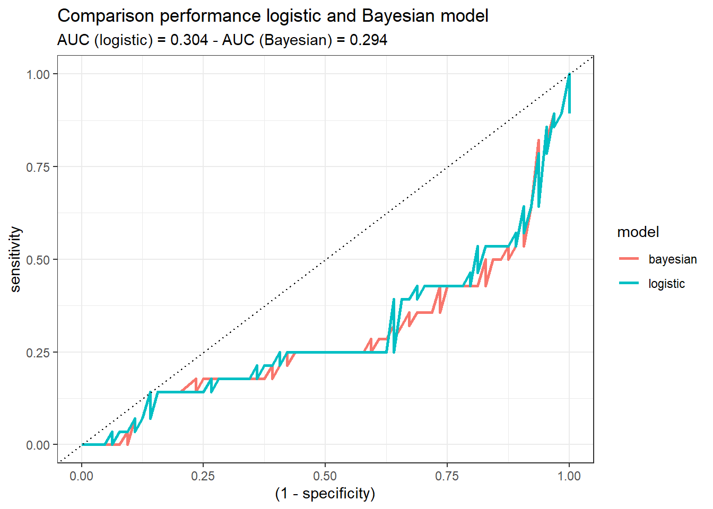
Both models demonstrate similar performance. If we would have to decide, at this step of the analysis, one of them (logistic or Bayesian), there would not be a reason to choose one or the other. Probably, the logistic one, since it may sounds more familiar. But this might change when the uncertainty idea comes up!
Uncertainty
First, we are going to explore the outcomes of the test set provided by the logistic model. These values represent the probability [2] of each instance of being labeled as “No survive” five years after the operation:
pred_logistic <- predict(logistic_model, hab_test, type = 'response')
p1 <- pred_logistic %>%
enframe() %>%
ggplot(aes(value)) +
geom_density(fill = 'steelblue', alpha = 0.5) +
theme_bw() +
labs(x = 'Probability', y = 'Density')
p2 <- pred_logistic %>%
enframe() %>%
ggplot(aes(value)) +
geom_histogram(fill = 'yellow', alpha = 0.5, color = 'black', binwidth = 0.05) +
theme_bw() +
labs(x = 'Probability', y = 'Density')
p1 + p2 + plot_layout(ncol = 2)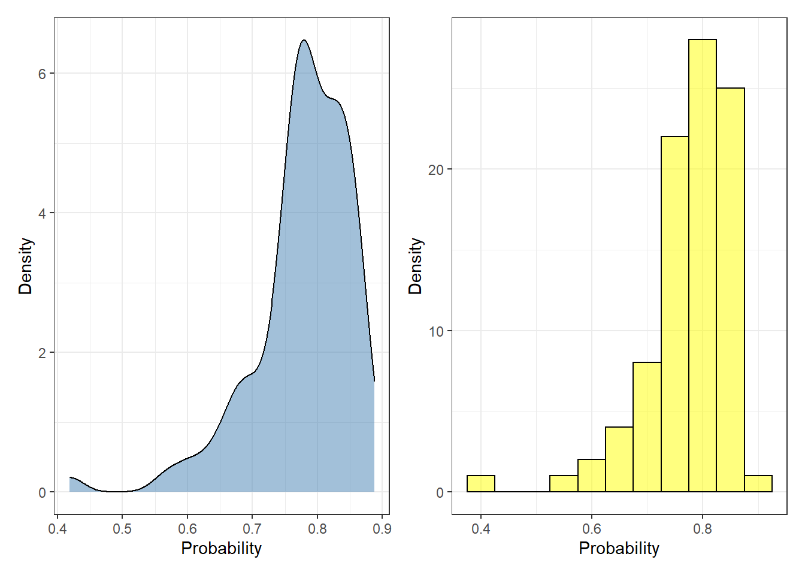
Each probability value represents a single observation. To convert the predicted probability to labels, the user needs to specify a threshold where every value above the threshold is defined as “No survive”, otherwise “survive”. Most of the cases, this creates problematic scenarios where two observations can be equally labeled in spite of having distinct probabilities (e.g. 0.6 and 0.95).
By contrast, for each one of observations in the test set, the Bayesian model does not provide a single probability value but a posterior distribution. We can represent the posterior distributions from the 92 observations (test set) with a boxplot, for instance:
plot_uncertainty <- posterior_linpred(bayesian_model, newdata = hab_test, transform = TRUE) %>%
as_tibble() %>%
pivot_longer(everything(), names_to = 'rank_obs', values_to = 'pred_surv_n_bay')Instead of posterior_linpred(..., transform=TRUE) please call posterior_epred(), which provides equivalent functionality.plot_uncertainty %>%
ggplot(aes(rank_obs, pred_surv_n_bay)) +
geom_boxplot() +
theme_bw() +
labs(x = 'Test set - Observation', y = 'Probability (survival == "No survive")')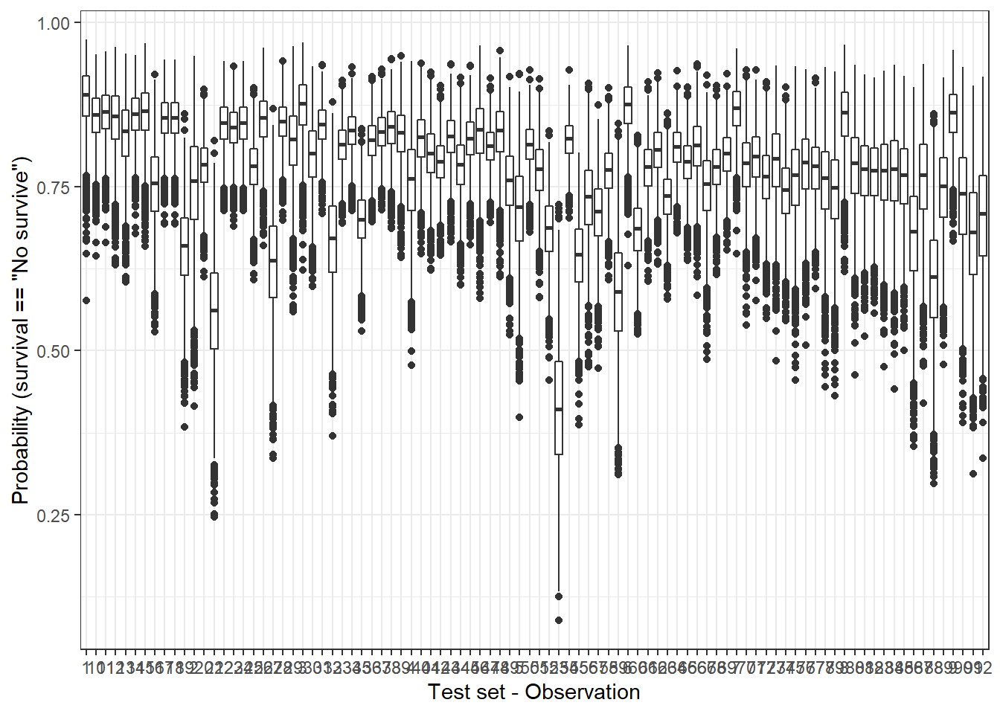
Another way to check the dispersion of the predicted outcome is with a ridge plot, that is especially useful when the number of samples is low. So, let’s pick only two observations:
plot_uncertainty %>%
# if you want to reproduce this code, just change the character '1' or '5' for any other.
filter(rank_obs %in% c('1', '5')) %>%
ggplot(aes(pred_surv_n_bay, rank_obs)) +
geom_density_ridges(aes(fill = rank_obs), alpha = 0.6) +
theme_bw() +
labs(y = 'Test set - Observation', x = 'Probability (survival == "No survive")')Picking joint bandwidth of 0.0102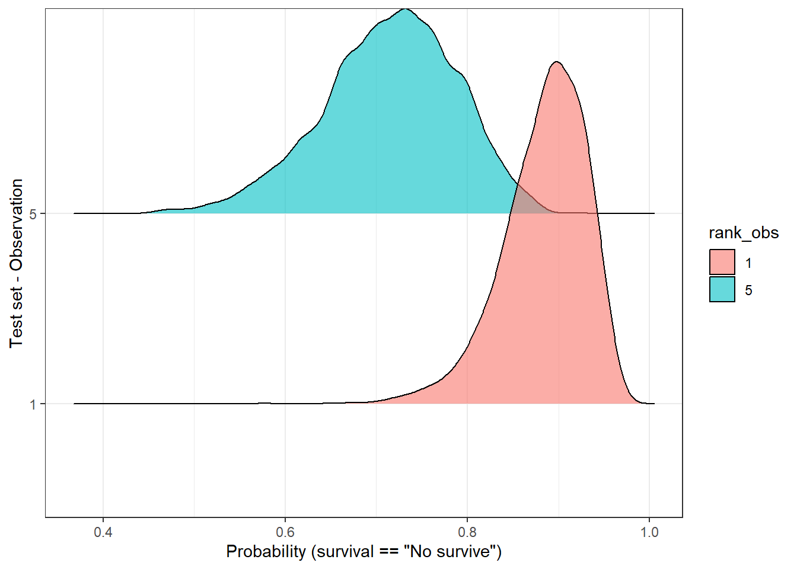
In the above plot, we observe that both distributions have a “peak” (known as MAP [1]) above 0.5, therefore the predicted label would be, in both cases, ‘no survive’. But, are these two predictions equally certain? Well, we notice, at least, two things:
- Both MAPs have different values (sample 1 - 0.9, sample 5 - 7.2).
- Observation number 5 has a flatter curve in comparison with the number 1.
In both cases, observation 5 reflects a higher uncertainty regarding its predicted label in comparison with observation 1. Should we make the same clinical decisions in both cases? Would this information be valuable in a clinical environment…? Probably yes, but first, we should find a way to measure it.
Measuring uncertainty [3]
A handy option is to use the standard deviation (sd) of the distribution, so we can estimate one value for each observation. With this in mind, we can plot the distribution of the sd from the 92 observations of the test dataset:
std_dev_tbl <- plot_uncertainty %>%
group_by(rank_obs) %>%
summarise(std_dev = sd(pred_surv_n_bay)) %>%
ungroup()
std_dev_tbl %>%
ggplot(aes(std_dev)) +
geom_density(fill = 'steelblue', alpha = 0.5) +
theme_bw() +
labs(x = 'Standard deviation (sd)',
y = 'Density') 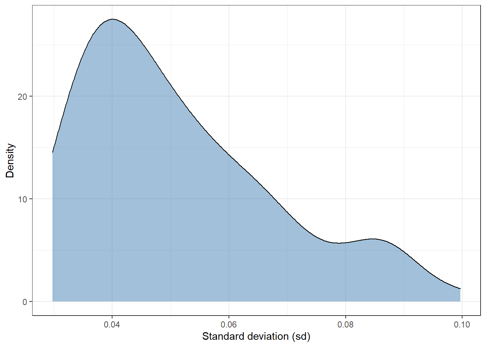
Most of observations have a standard deviation of around 0.04. There are a few extreme values in the interval 0.08-0.10. In short, this plot shows that there are some observations whose sd is twice as high as others.
We can filter and select observations based on the dispersion of its posterior distribution. For instance, we can split the test set of 92 observations in percentiles using the sd and plot the 1st (lowest sd) and 10th percentile (highest sd). In this way, it allows us to compare those observations with the highest and lowest standard deviation:
top_sd <- std_dev_tbl %>%
mutate(tile = ntile(std_dev, 10)) %>%
filter(tile == 1 | tile == 10)
plot_uncertainty %>%
# left_join(std_dev, by = 'rank_obs') %>%
filter(rank_obs %in% top_sd$rank_obs) %>%
ggplot(aes(pred_surv_n_bay, rank_obs)) +
geom_density_ridges(aes(fill = rank_obs), alpha = 0.6, show.legend = FALSE) +
theme_bw() +
labs(y = 'Test set - Observation', x = 'Probability (survival == "No survive")')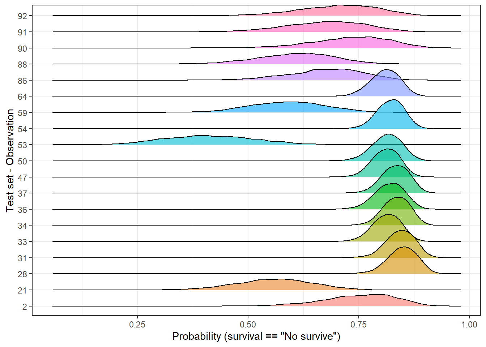
In the above plot, we easily identify to which group each observation belongs to. Independently of the predicted labels, should their predictions be considered equally likely? If the final user of the model just receives a categorical outcome, he/she is definitely skipping some valuable information since some predictions look more unlikely than others. As an alternative, predictions could be grouped into categories and neglect those with a high dispersion or make it clear than further support should be required.
In this post, we have measured the uncertainty of observations and identifying those samples with high uncertainty. But, we have not talked yet about what is the origin of it.
Why some predictions are more unlikely than others?
In other words, why our model has more doubts about a sample than others? I find two possible explanations:
- The sample is mislabeled.
- Group variability.
The first one is difficult to address but we can explore the group variability. Since we have three continuous explanatory variable, we can easily do a PCA with the function prcomp:
pca_tbl <- hab_test %>%
# take only numeric columns
select_if(is.numeric) %>%
# Important - we need to scale and center each variable before PCA
prcomp(scale = TRUE, center = TRUE) %>%
tidy() %>%
mutate(row = as.character(row)) %>%
pivot_wider(id_cols = row, values_from = value, names_from = PC, names_prefix = 'PC') %>%
left_join(top_sd %>% select(-std_dev), by = c('row' = 'rank_obs')) %>%
mutate(tile = ifelse(is.na(tile), 'ok', tile)) %>%
left_join(hab_test %>% select(survival) %>% mutate(row = as.character(row_number())),
by = 'row')
pca_tbl %>%
ggplot(aes(PC1, PC2)) +
geom_point() +
theme_bw()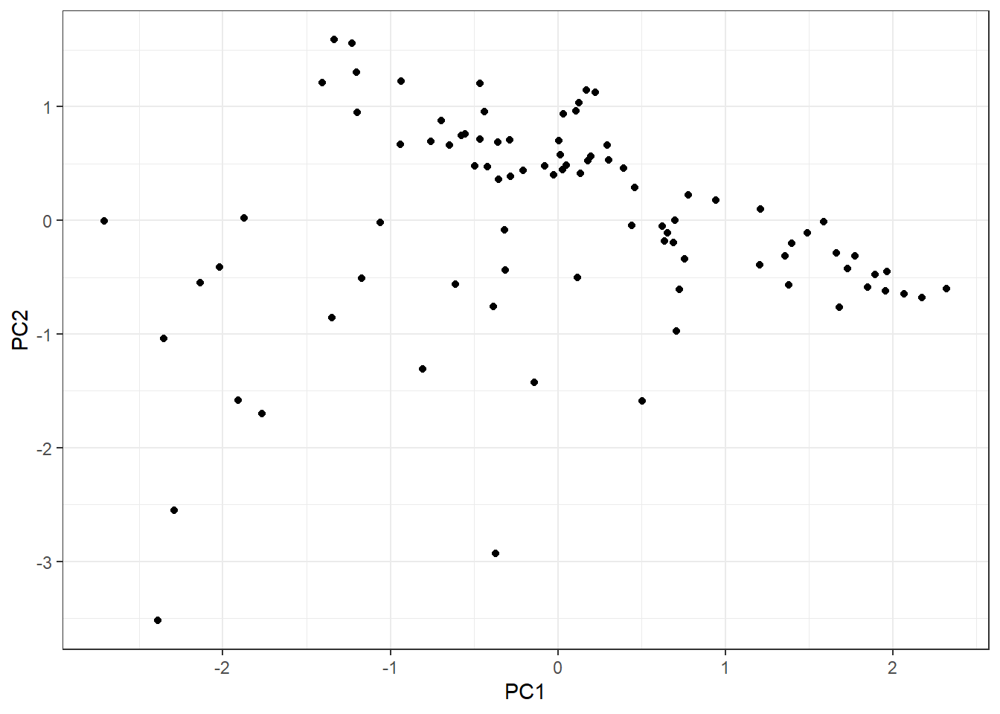
As we have observations in two categories, let’s split them into two plots:
Since we have observations defined into two categories (survival = Yes, survival = No), let’s lay out the plot into two different:
pca_tbl %>%
ggplot(aes(PC1, PC2)) +
geom_point() +
theme_bw() +
facet_grid(~ survival)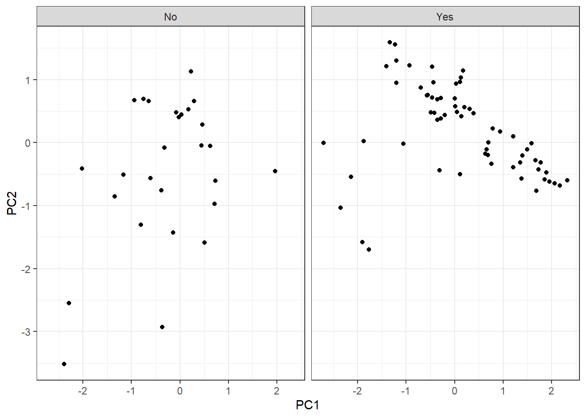
Furthermore, we are going to highlight those observations that belong to the highest and lowest sd groups:
pca_tbl %>%
mutate(tile = case_when(
tile == '1' ~ 'lowest sd',
tile == '10' ~ 'highest sd',
tile == 'ok' ~ 'ok'
)) %>%
ggplot(aes(PC1, PC2)) +
geom_point(aes(fill = tile), color = 'black', shape = 21, size = 2) +
theme_bw() +
facet_grid(~ survival) +
labs(fill = 'Category')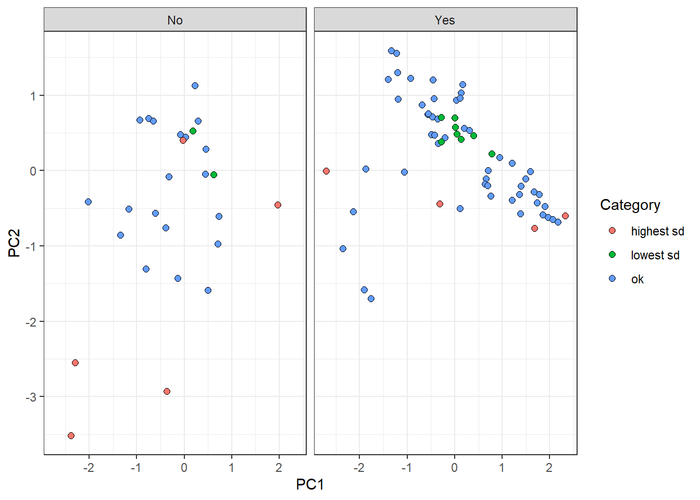
On the one hand, “lowest sd” group observations are centrally located in the plot. This reflects a tendency of these samples to have similar features values with observations belonging to their own label. On the other hand, “highest sd” group points tend to be dispersed from the rest, all over the components. It makes sense since the uncertainty to predict these points come from the fact that their own feature values are different from points on the same category.
Surprisingly, there is a red point on the left panel whose location is centric respect to the rest of the values. This perhaps arises the disadvantage of reducing a probability distribution to a point-estimate (standard deviation). The dispersion estimation might have not be accurate enough and further ways of measuring might be needed.
Conclusion
As humans, we make decisions based on uncertainty, even though we are not aware of it. If the weather forecasters show 10% of raining on the weekend, we will probably make a plan to go to the mountain. With 90% we may rethink about it…When we are talking with someone about a delicate topic, we pick the words based on the uncertainty of his/her predicted response: words with a broad meaning and therefore ambiguous might not be chosen, due to the high uncertainty. Therefore, if we constantly map our reality and act through the constant evaluation of uncertainty, why should we believe in predictions from machines without a shadow of doubt?
My personal view is that the measurement of uncertainty will end up being essential. Especially, for every decision process supported by a machine in a clinical environment. In that way, I find Bayesian models a nice fit for many of the challenges of tomorrow.
Notes
[1] To calculate the roc curves of the Bayesian model’s predictions, a single probability value for each observation is required. There are multiple ways to estimate it, such as mean, median, and MAP (Highest Maximum A Posteriori). In this case, I chose the latest because it provided the highest performance.
[2] The function predict retrieves outcomes as probabilities because we specified type = response as argument. Otherwise, the default output would be as logit.
[3] I am interested to know more ways to estimate the “uncertainty” of a prediction. Please if you have any reference or idea, let me know! ;P